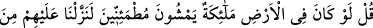
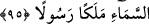
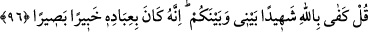

100. De ki: Rabbimin rahmet hazinesine eğer siz sahip olsaydınız, harcanır
korkusuyla kıstıkça kısardınız. İnsanoğlu da pek eli sıkıdır!
Zâten, kendilerine hidâyet rehberi” vahiy “geldiğinde, insanların” yâni Kureyş’in
Kur’ân’a ve nübüvvete “inanmalarını sırf,” peygamberin beşer cinsinden olmasını
inkâr ederek: “Allah, peygamber olarak bir beşeri mi gönderdi?” demeleri
engellemiştir.” Mâni olan, bu sözü söylemeyi gerektiren inançtır.
95. Şunu söyle: Eğer yeryüzünde yerleşmiş gezip dolaşan melekler olsaydı,
elbette onlara gökten, peygamber olarak bir melek gönderirdik.
Şüphelerine cevap olarak: “Şunu söyle: Eğer yeryüzünde” insanlar yerine orada
“yerleşmiş” semâ ehlinden haberler işitip bilinmesi gerekenleri bilmek üzere
kanatlarıyla semâya uçmayan ve insanların yürüdüğü gibi ayakları üzere “gezip
dolaşan melekler olsaydı, elbette onlara gökten,” din ve dünya işlerinde ihtiyaç
duydukları şeyleri açıklaması için “peygamber olarak bir melek gönderirdik.” Çünkü
her cins kendi cinsine meyleder. Yeryüzünün sakinleri beşer olunca faydalı olma ve
istifâdeyi temin için peygamberlerinin de beşer olması gerekir. Onlar ise aynı cinsten
olmanın kaynaşmayı, farklılaşmanın uyuşmazlığı getireceğini bilemediler.
O beşer kendisinin sizin gibi olduğunu buyurdu
Ta ki kendi cinsinize gelesiniz ve ondan eksik olasınız
Çünkü hemcinslik şaşılacak kadar cezb edicidir
Cinsini cezb eden her yerde onu taleb eder
96. De ki: Benimle sizin aranızda gerçek şâhid olarak Allah yeter. Zira O,
kullarını hakikaten bilip görmektedir.
“De ki: “Benimle sizin aranızda” size tebliğ etmekle görevlendirildiğim şeyi tebliğ
ettiğim, sizinse yalanlayıp inad ettiğiniz şey husûsunda “gerçek şâhid olarak” yalnızca
“Allah yeter. Zira O, kullarını hakikaten bilip görmektedir.” Onların hem dışlarını hem
de içlerini bilir, buna göre de onlara karşılıklarını verir.
Burada Hz. Peygamber (s.a.)’e bir tesellî ve kâfirlere de tehdid vardır. Yine bu âyette